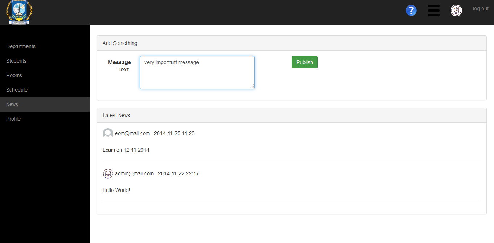

Сторінка записів стрічки новин.
Ця сторінка надає можливість переглядати вміст стрічки новин, а також додавати туди нові записи.

Щоб додати новий запис у стрічку новин введіть текст повідомлення у поле Message Text й натисніть кнопку Publish.
Created with the Personal Edition of HelpNDoc: Generate EPub eBooks with ease